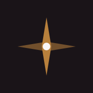

The Arsenal on your phone
You can put the Arsenal on your phone or tablet as an app: with its own icon on your home screen, no address bar, and usable where there is no internet, in a sports hall, a community centre or a basement room. No app store is needed and it costs nothing. Whatever changes on the site reaches your app by itself.

Installing
Open this page on the device where you want the Arsenal. After that it takes a few taps.
- Open this page in Safari.
- Tap the Share button (a square with an arrow pointing up). If you cannot see it, tap the three dots ⋯ first.
- Choose Add to Home Screen. If it is not there straight away, scroll down the list a little.
- Tap Add. The Arsenal icon is now on your home screen.
- Open this page in Chrome (Samsung Internet and Edge work too).
- If the Install the Arsenal button appears above, tap it. Done.
- No button? Tap the ⋮ menu at the top right and choose Install app or Add to Home screen.
- In Chrome or Edge there is a small install icon on the right of the address bar, or use the button above if it appears.
- The Arsenal then opens in its own window, separate from your browser.
- On a Mac you can also use Safari: the File menu, then Add to Dock.
Without internet
When you open the Arsenal as an app, it puts the whole site on your device as soon as there is internet, and keeps it up to date. The exercises, the cards, the atlas and search then also work without a connection. It comes to about 8 MB, roughly a few photos' worth.
Pages you have simply viewed in the browser are also kept for offline use, but only those.
Passing it on
Let participants scan this code with their phone camera. They land on this page and see straight away how to install the Arsenal. Put the code on a flip chart, a handout or a slide, and after a training they have the exercises to hand.


Good to know
- Always the latest version. With internet, the app always shows the latest version of every page. There is nothing to update.
- My selection on the iPhone. On an iPhone or iPad the app has its own memory, separate from Safari. A selection you made in Safari will not appear in the app, so start it again there. On Android and on a computer it is the same selection.
- No account. The app asks for no personal details. As on the site, the only thing counted is how many people visit a page, without cookies.
- Removing it works like any app: press and hold the icon and choose remove.